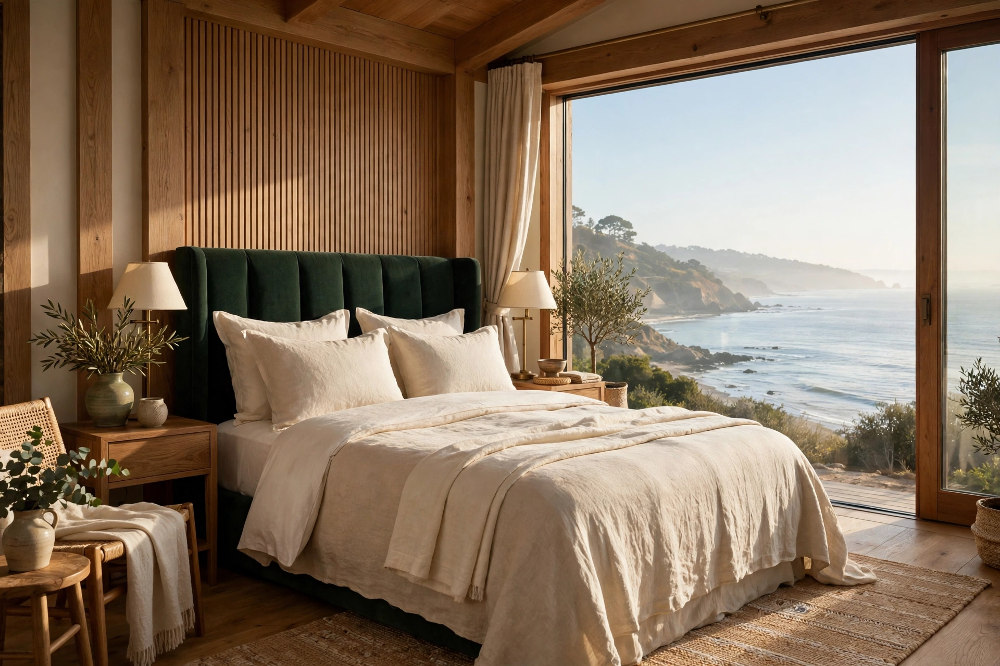
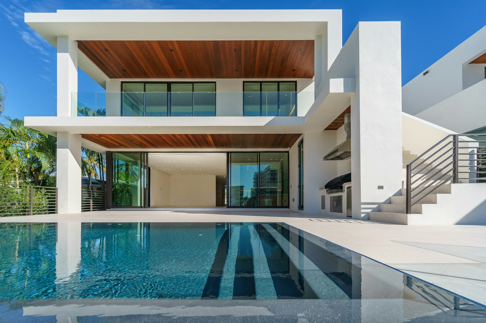
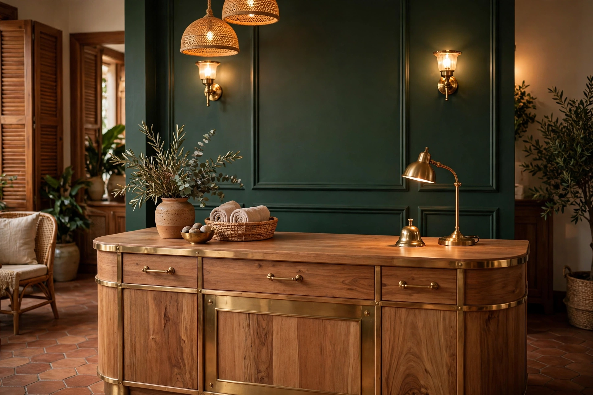

SEU DESTINO. UM NOVO OLHAR.
Um tempo
para ficar.
Dias mais leves, encontros especiais e um lugar para chamar de seu durante a viagem.
Planeje sua estadia ›
O LUGAR CERTO PARA A SUA PAUSASINTA-SE BEM-VINDO
Há lugares que
a gente sente.
Esta é uma prévia demonstrativa para você imaginar sua hospedagem. Ao personalizar, suas fotos, seus textos e os detalhes reais da pousada ocupam este espaço.
Dados personalizáveisImagens ilustrativasSeu jeito de acolher
ESCOLHA SEU CANTINHO
Para descansar.
Para lembrar.
Acomodações apresentadas com clareza, do primeiro olhar aos detalhes da sua estadia.
O melhor da viagem
é como ela faz a gente sentir.
UM CONVITE PARA VIVER O SEU DESTINO
UM POUCO DO NOSSO UNIVERSO
Olhe com calma.

RESERVA DIRETA
Comece a planejar
seus próximos dias.
Consulte um período e envie uma solicitação à hospedagem. A disponibilidade e a confirmação serão verificadas no atendimento.
Seu destino